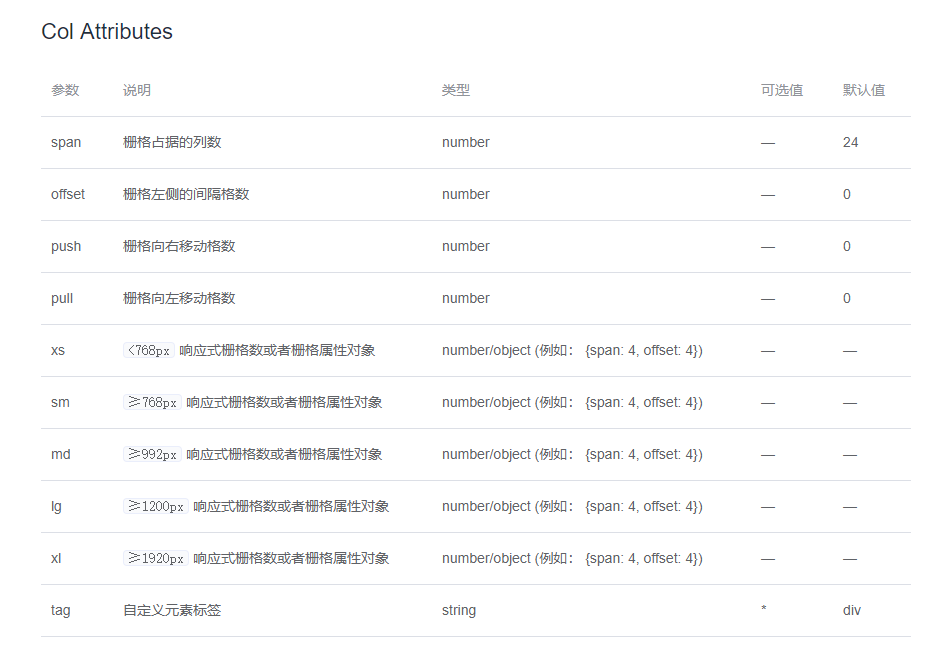

1.col,row布局注意事项
el-row el-col gutter就是css，span的时候宽度是按boder-box来计算。
将 type 属性赋值为 'flex'，可以启用 flex 布局，并可通过 justify 属性来指定 start, center, end, space-between, space-around 其中的值来定义子元素的排版方式
xs、sm、md、lg 和 xl

Element 额外提供了一系列类名，用于在某些条件下隐藏元素。这些类名可以添加在任何 DOM 元素或自定义组件上。如果需要，请自行引入以下文件：
import 'element-ui/lib/theme-chalk/display.css';
包含的类名及其含义为：
hidden-xs-only - 当视口在 xs 尺寸时隐藏hidden-sm-only - 当视口在 sm 尺寸时隐藏hidden-sm-and-down - 当视口在 sm 及以下尺寸时隐藏hidden-sm-and-up - 当视口在 sm 及以上尺寸时隐藏hidden-md-only - 当视口在 md 尺寸时隐藏hidden-md-and-down - 当视口在 md 及以下尺寸时隐藏hidden-md-and-up - 当视口在 md 及以上尺寸时隐藏hidden-lg-only - 当视口在 lg 尺寸时隐藏hidden-lg-and-down - 当视口在 lg 及以下尺寸时隐藏hidden-lg-and-up - 当视口在 lg 及以上尺寸时隐藏hidden-xl-only - 当视口在 xl 尺寸时隐藏2.container容器
<el-container>：外层容器。当子元素中包含 <el-header> 或 <el-footer> 时，全部子元素会垂直上下排列，否则会水平左右排列。
<el-header>：顶栏容器。
<el-aside>：侧边栏容器。
<el-main>：主要区域容器。
<el-footer>：底栏容器。
注意考虑一个兼容性问题，因为采用的是flex布局
<el-container> 的子元素只能是后四者，后四者的父元素也只能是 <el-container>
header,footer默认高度60px，有height属性
aside默认宽度300px,有width属性
3.color颜色和字体，边框等
有一套初始化模板，可以通过scss改变变量值，或着直接下载一套自定义主题进行更改
font-family: "Helvetica Neue",Helvetica,"PingFang SC","Hiragino Sans GB","Microsoft YaHei","微软雅黑",Arial,sans-serif;
| 层级 | 字体大小 |
| 辅助文字 | 12px Extra Small |
| 正文（小） | 13px Small |
| 正文 | 14px Base |
| 小标题 | 16px Medium |
| 标题 | 18px large |
| 主标题 | 20px Extra large |
边框实线 默认1px 虚线 默认2px
圆角
无圆角
border-radius: 0px
小圆角
border-radius: 2px
大圆角
border-radius: 4px
圆形圆角
border-radius: 30px
基础投影 box-shadow: 0 2px 4px rgba(0, 0, 0, .12), 0 0 6px rgba(0, 0, 0, .04)
浅色投影 box-shadow: 0 2px 12px 0 rgba(0, 0, 0, 0.1)
Icon图标直接使用类名
<i class="el-icon-edit"></i>
<i class="el-icon-share"></i>
<i class="el-icon-delete"></i>
<el-button type="primary" icon="el-icon-search">搜索</el-button>在标签里插入图标用icon属性
图标大全 https://element.eleme.cn/#/zh-CN/component/icon